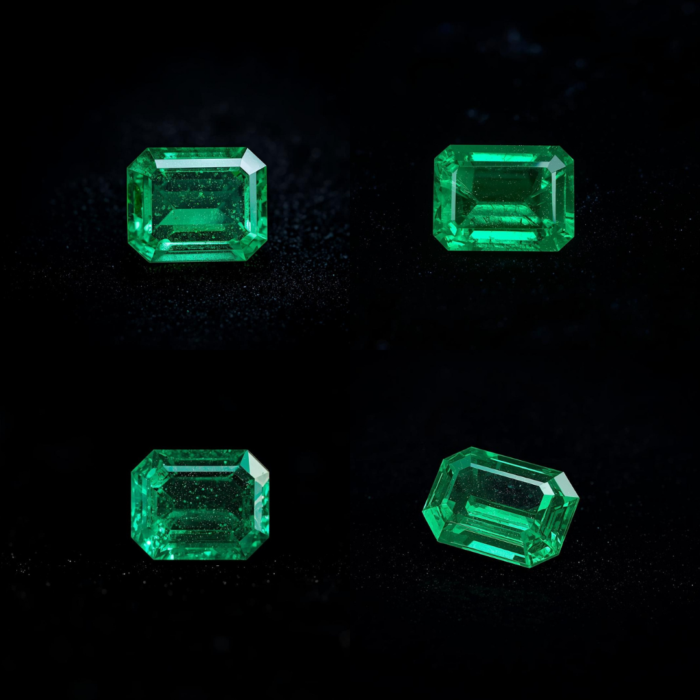

为何选择祖母绿
- ✓ 自然界无与伦比的鲜艳翠绿色
- ✓ 哥伦比亚和赞比亚伦理采购
- ✓ 尊贵的"四大贵石"之一
- ✓ 卓越的投资潜力
- ✓ 可获GIA、Gübelin、SSEF认证
高品质祖母绿持续稳步升值，作为繁荣与新生的象征，代代相传。
色彩与品质指南
色彩
最受推崇的是饱和度高的鲜艳翠绿色，略带蓝调。哥伦比亚产地偏暖绿色，赞比亚产地偏冷色调。
净度
内含物（法语称"jardin"＝花园）在祖母绿中是预期且可接受的。肉眼无瑕的祖母绿极为稀有，价格极高。
处理
轻度注油处理是标准行业惯例。雪松油或无色油浸润十分常见。过度处理会大幅降低价值。
认证
Gübelin、SSEF、GIA、AGL提供高品质祖母绿的产地和处理综合报告。
克拉重量指南
- 1克拉以下：精致珠宝的理想之选
- 1–2克拉：婚戒的完美尺寸
- 2–3克拉：收藏家与投资级
- 3–5克拉：博物馆级珍品
- 5克拉以上：拍卖级投资珍品
3克拉以上色彩鲜艳且净度良好的高品质祖母绿极为稀有珍贵。
文化与传统意义
- 诞生石：五月
- 象征：繁荣、新生、成长、智慧
- 行星关联：水星（吠陀占星术 — 提升沟通与智慧）
- 中国文化：和谐、成长、繁荣的象征
祖母绿因其翡翠般的绿色，在东方文化中尤被视为成长与繁荣的象征。
澳大利亚市场投资价值
祖母绿在澳大利亚市场展现出稳健的升值趋势，尤其是高品质哥伦比亚产地备受关注。随着历史悠久的哥伦比亚矿区供应减少，投资级祖母绿持续走高。权威鉴定证书确保真实性和价值保全。
咨询价格
正在寻找高品质祖母绿？
💎 发现您的专属宝石方案
📩 获取专业宝石鉴定师的定制价格建议